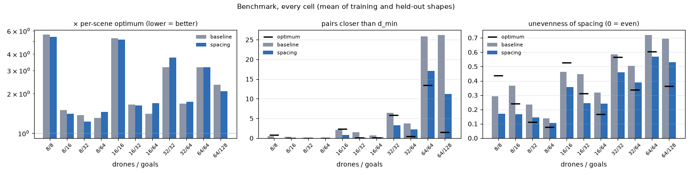
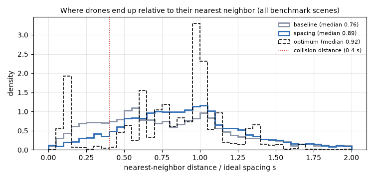
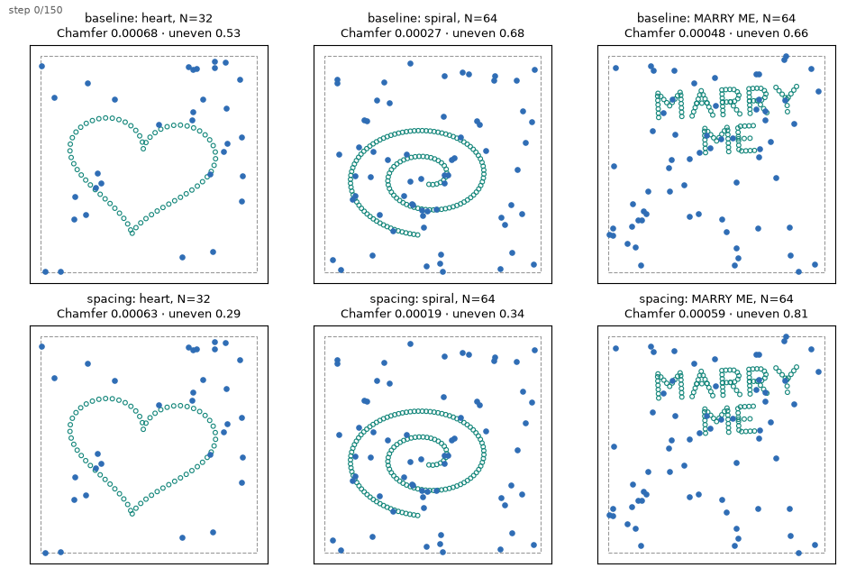
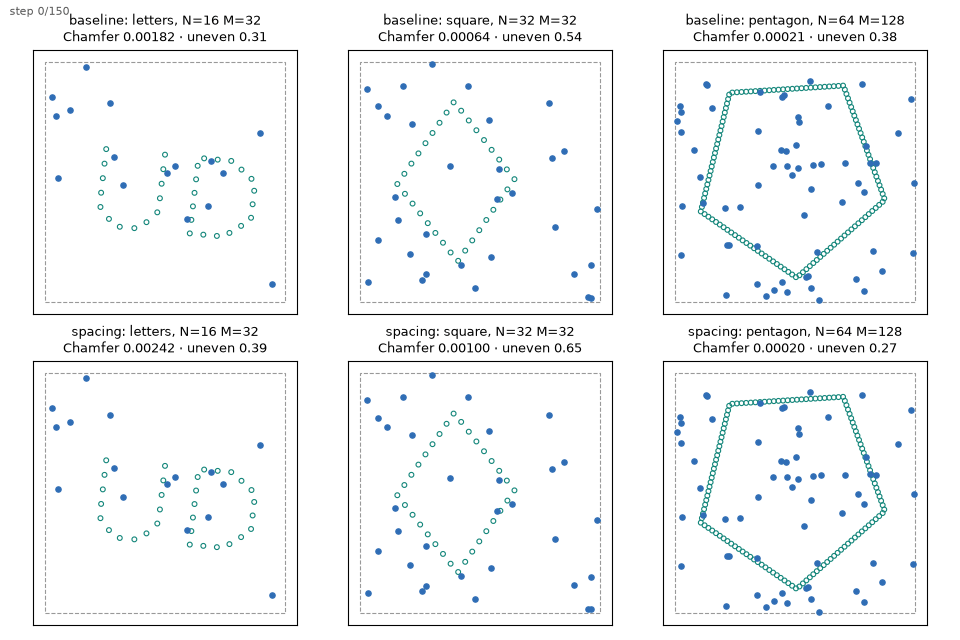
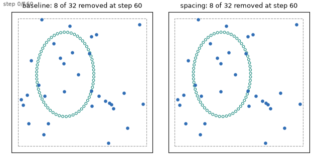

<meta charset="utf-8">
<title>Spacing Loss Report</title>
<meta name="claude:viewport-fit-sides" content="cover">
<link rel="stylesheet" href="https://fonts.googleapis.com/css2?family=Space+Grotesk:wght@500;700&family=IBM+Plex+Sans:ital,wght@0,400;0,500;0,600;1,400&family=IBM+Plex+Mono:wght@400;500&display=swap">
<script>
  window.MathJax = {
    tex: { inlineMath: [["\\(", "\\)"]], displayMath: [["\\[", "\\]"]] },
    svg: { fontCache: "global" },
    options: { skipHtmlTags: ["script", "style", "textarea", "code"] }
  };
</script>
<script src="https://cdn.jsdelivr.net/npm/mathjax@3.2.2/es5/tex-svg.js" async></script>
<style>
  /* Layout: one reading column of derivations, a lab-notebook feel; one interactive figure for the loss */
  :root {
    --bg: #F7F8FA; --panel: #FFFFFF; --edge: #DCE1E8; --fg: #1C2430; --muted: #5A6578;
    --accent: #2F6DB5; --grad: #C2412F; --target: #13867A; --tint: #EAF1FA;
    --display: "Space Grotesk", system-ui, sans-serif;
    --body: "IBM Plex Sans", system-ui, sans-serif;
    --mono: "IBM Plex Mono", ui-monospace, Menlo, monospace;
  }
  @media (prefers-color-scheme: dark) { :root:not([data-theme="light"]) {
    --bg: #10151C; --panel: #171E27; --edge: #2A3340; --fg: #E4E8EE; --muted: #98A2B3;
    --accent: #78A9E8; --grad: #E8806C; --target: #45C2B0; --tint: #1A2636; color-scheme: dark } }
  :root[data-theme="dark"] {
    --bg: #10151C; --panel: #171E27; --edge: #2A3340; --fg: #E4E8EE; --muted: #98A2B3;
    --accent: #78A9E8; --grad: #E8806C; --target: #45C2B0; --tint: #1A2636; color-scheme: dark }

  body { background: var(--bg); color: var(--fg); font-family: var(--body); font-size: 16px; line-height: 1.65;
    padding-left: max(16px, env(safe-area-inset-left, 0px)); padding-right: max(16px, env(safe-area-inset-right, 0px));
    padding-block: 40px 80px; }
  main { max-width: 760px; margin: 0 auto; display: grid; gap: 56px; }
  header { display: grid; gap: 12px; }
  .eyebrow { font-family: var(--mono); font-size: 12.5px; letter-spacing: .08em; text-transform: uppercase; color: var(--accent); }
  h1 { font-family: var(--display); font-size: clamp(30px, 5vw, 42px); line-height: 1.1; margin: 0; text-wrap: balance; }
  h2 { font-family: var(--display); font-size: 24px; line-height: 1.25; margin: 0; text-wrap: balance; }
  h3 { font-family: var(--display); font-size: 18px; margin: 8px 0 0; }
  section { display: grid; gap: 14px; scroll-margin-top: 16px; min-width: 0; }
  p { margin: 0; }
  .lede { color: var(--muted); font-size: 17px; }
  code { font-family: var(--mono); font-size: .88em; background: var(--tint); padding: 1px 5px; border-radius: 4px; }
  mjx-container[display="true"] { overflow-x: auto; overflow-y: hidden; max-width: 100%; padding-block: 4px; margin: 4px 0 !important; }
  .answer { background: var(--panel); border: 1px solid var(--edge); border-left: 4px solid var(--accent); border-radius: 6px; padding: 18px 20px; display: grid; gap: 10px; }
  .answer strong { font-family: var(--display); font-size: 17px; }
  .note { font-size: 14.5px; color: var(--muted); }
  .why { border-top: 1px solid var(--edge); padding-top: 12px; font-size: 15px; color: var(--muted); }
  .why b { color: var(--fg); font-weight: 600; }
  .tbl { overflow-x: auto; border: 1px solid var(--edge); border-radius: 6px; background: var(--panel); }
  table { border-collapse: collapse; width: 100%; font-size: 14.5px; font-variant-numeric: tabular-nums; }
  th, td { text-align: left; padding: 8px 12px; border-bottom: 1px solid var(--edge); vertical-align: top; }
  th { font-weight: 600; color: var(--muted); font-size: 13px; letter-spacing: .03em; }
  tr:last-child td { border-bottom: 0; }
  td.num { text-align: right; font-family: var(--mono); }
  ol.algo { margin: 0; padding-left: 22px; display: grid; gap: 6px; }
  nav { display: flex; flex-wrap: wrap; gap: 6px 14px; font-size: 14px; }
  nav a { color: var(--accent); text-decoration: none; }
  nav a:hover, nav a:focus-visible { text-decoration: underline; outline: none; }

  /* interactive Chamfer figure */
  .lab { background: var(--panel); border: 1px solid var(--edge); border-radius: 8px; padding: 16px; display: grid; gap: 14px; }
  .lab-grid { display: grid; grid-template-columns: minmax(0, 1fr) 220px; gap: 18px; align-items: start; }
  @media (max-width: 640px) { .lab-grid { grid-template-columns: 1fr; } }
  svg#field { width: 100%; max-width: 440px; aspect-ratio: 1; display: block; margin: 0 auto; touch-action: none; user-select: none; }
  .readout { display: grid; gap: 10px; font-size: 14px; min-width: 0; }
  .stat { display: grid; gap: 2px; }
  .stat span { color: var(--muted); font-size: 12.5px; letter-spacing: .03em; }
  .stat output { font-family: var(--mono); font-size: 20px; font-variant-numeric: tabular-nums; }
  .stat.total output { font-size: 24px; font-weight: 500; }
  .controls { display: flex; flex-wrap: wrap; gap: 8px; }
  button { font: 500 13.5px var(--body); color: var(--fg); background: var(--bg); border: 1px solid var(--edge); border-radius: 6px; padding: 6px 12px; cursor: pointer; }
  button:hover { border-color: var(--muted); }
  button:focus-visible, input:focus-visible { outline: 2px solid var(--accent); outline-offset: 2px; }
  button[aria-pressed="true"] { background: var(--accent); color: var(--panel); border-color: var(--accent); }
  .toggles { display: grid; gap: 6px; font-size: 13.5px; }
  .toggles label { display: flex; gap: 8px; align-items: center; cursor: pointer; }
  .sw { display: inline-block; width: 18px; height: 0; border-top: 2px solid; }
  .sw.a { border-color: var(--accent); } .sw.b { border-color: var(--target); border-top-style: dashed; } .sw.g { border-color: var(--grad); }
  .diagram { overflow-x: auto; background: var(--panel); border: 1px solid var(--edge); border-radius: 8px; padding: 8px; }
  .diagram svg { display: block; width: 100%; min-width: 640px; height: auto; }
  .dg-box { fill: var(--panel); stroke: var(--edge); stroke-width: 1.5; }
  .dg-runner { fill: var(--tint); stroke: var(--accent); stroke-width: 2; }
  .dg-mod { stroke: var(--accent); }
  .dg-out { stroke: var(--target); }
  .dg-test { stroke-dasharray: 5 4; }
  .dg-loop { fill: none; stroke: var(--accent); stroke-dasharray: 5 4; stroke-width: 1.2; }
  .dg-title { font: 600 13px var(--mono); fill: var(--fg); }
  .dg-fn { font: 11px var(--mono); fill: var(--fg); }
  .dg-grad { fill: var(--grad); }
  .dg-note { font: italic 11px var(--body); fill: var(--muted); }
  .dg-loop-lbl { font: italic 600 11px var(--body); fill: var(--accent); }
  .dg-line { fill: none; stroke: var(--muted); stroke-width: 1.5; }
  .dg-head { fill: var(--muted); }
  .dg-lbl { font: 10.5px var(--body); fill: var(--muted); text-anchor: middle; }
  .dg-ret { font: 10.5px var(--body); fill: var(--target); text-anchor: middle; }
  figure.result { margin: 0; display: grid; grid-template-columns: minmax(0, 2fr) minmax(0, 3fr); gap: 12px; align-items: center; background: #FFFFFF; border: 1px solid var(--edge); border-radius: 8px; padding: 12px; }
  figure.result img { width: 100%; height: auto; }
  figure.result figcaption { grid-column: 1 / -1; font-size: 13.5px; color: #5A6578; }
  figure.result.wide, figure.result.gifs { grid-template-columns: 1fr; }
  @media (max-width: 560px) { figure.result { grid-template-columns: 1fr; } }
  .verdict { display: grid; grid-template-columns: repeat(auto-fit, minmax(150px, 1fr)); gap: 10px; }
  .kpi { background: var(--panel); border: 1px solid var(--edge); border-radius: 8px; padding: 12px 14px; display: grid; gap: 4px; }
  .kpi span { font-size: 12.5px; color: var(--muted); }
  .kpi b { font-family: var(--mono); font-size: 18px; font-weight: 500; font-variant-numeric: tabular-nums; }
  .kpi i { font-style: normal; font-size: 12.5px; }
  .good { color: var(--target); } .bad { color: var(--grad); }
  figure.result.wide, figure.result.gifs { grid-template-columns: 1fr; }
  .chip { display: inline-block; font: 500 11.5px var(--mono); letter-spacing: .03em; padding: 1px 8px; border-radius: 999px; border: 1px solid currentColor; vertical-align: middle; white-space: nowrap; }
  .chip.done { color: var(--target); } .chip.next { color: var(--accent); } .chip.todo { color: var(--muted); }
  .part { display: grid; gap: 12px; border-top: 2px solid var(--accent); padding-top: 40px; scroll-margin-top: 16px; }
  .part nav { margin-top: 4px; }
  footer { color: var(--muted); font-size: 13.5px; border-top: 1px solid var(--edge); padding-top: 16px; }
</style>

<main>
  <header>
    <div class="eyebrow">CMSC 838B · Swarm project · Phase 2 experiment</div>
    <h1>Does a spacing term spread the drones evenly?</h1>
    <p class="lede">Two policies trained the same way, once with the original loss (<strong>baseline</strong>) and once with an added repulsion term that pushes neighbors apart (<strong>spacing</strong>). Both are scored on the same 468 benchmark scenes from the same starts.</p>
  </header>

  <div class="answer">
    <strong>Answer: yes, overall</strong>
    <p>The spacing term halves crowding and makes the spacing between drones <em>more even than the per-scene optimum</em> on average, while shape error on training shapes stays the same (2.19× vs 2.23× the optimum). The cost: held-out shapes get 4% worse (2.34× vs 2.25×), and some dense, detailed scenes like MARRY ME get worse, not better.</p>
  </div>

  <div class="verdict">
    <div class="kpi"><span>Unevenness (0 = even)</span><b>0.433 → 0.307</b><i class="good">−29%, optimum 0.340</i></div>
    <div class="kpi"><span>Drones crowding a neighbor (&lt; 0.4 s)</span><b>20.6% → 9.9%</b><i class="good">halved, optimum 13.9%</i></div>
    <div class="kpi"><span>Pairs closer than d_min</span><b>6.1 → 3.2</b><i class="good">−48% per scene</i></div>
    <div class="kpi"><span>Shape error, training shapes</span><b>2.23× → 2.19×</b><i>unchanged (× optimum)</i></div>
    <div class="kpi"><span>Shape error, held-out shapes</span><b>2.25× → 2.34×</b><i class="bad">+4% worse</i></div>
    <div class="kpi"><span>Self-healing (end Chamfer)</span><b>0.00062 → 0.00051</b><i class="good">recovers further, evenly</i></div>
  </div>

  <section id="what">
    <h2>1. What changed</h2>
    <p>One new term in <code>swarm/losses.py</code>, <code>spacing_loss</code>, added to the loss with weight 1. Over the last 20% of steps it penalizes every pair of drones closer than \(0.8\,s\), where \(s\) is the ideal spacing (outline length ÷ N):</p>
    \[ L_{\text{spacing}} = \frac{1}{s^2}\,\frac{1}{|H|\,N}\sum_{t \in H}\sum_i\sum_{j \ne i} \max\big(0,\ 0.8\,s - \lVert p_{t,i} - p_{t,j}\rVert\big)^2 \]
    <p>It has the same soft shape as the collision penalty, but twice the radius and only once the formation should be holding. It is the "repulsion loss" of PU-Net (Yu et al., CVPR 2018), used in point-cloud generation to stop points clustering, and it is backed by the result that minimizers of repulsive energies on a curve are evenly spaced by arc length. Everything else was identical: same data, seed, 3,000 iterations, 16 minutes each. Early stopping (new, 4 checks without a 1% improvement) did not trigger in either run, because both were still improving after iteration 2,000.</p>
    <p class="note">New metric, <strong>unevenness</strong>: the standard deviation divided by the mean of each drone's distance to its nearest neighbor, at the end of a run. 0 means every drone has its nearest neighbor at exactly the same distance.</p>
  </section>

  <section id="cells">
    <h2>2. Every benchmark cell</h2>
    <figure class="result wide">
      
      <figcaption>Gray = baseline, blue = spacing, black ticks = per-scene optimum. Mean of training and held-out shapes per cell.</figcaption>
    </figure>
    <p><strong>Crowding and evenness improve in every cell.</strong> The biggest gains are in the dense 64-drone cells, where crowding was worst: 26 → 17 close pairs at 64/64 and 25 → 11 at 64/128. In every cell with one or two goals per drone (6 of 11) the spacing run is even more even than the per-scene optimum, which only minimizes shape error and doesn't ask for evenness. With 4–8 goals per drone the optimum is still more even.</p>
    <p><strong>Shape error is mixed.</strong> On training shapes it is better in 7 cells (largest gain at 16/32: 1.70 → 1.37×) and worse in 4. The clearest loss is 32 drones on 32 goals, 2.92 → 3.58×. With one goal per drone, pushing neighbors apart can push a drone off its own goal.</p>
    <figure class="result">
      
      <figcaption>Each drone's distance to its nearest neighbor, divided by the ideal spacing \(s\), over all benchmark scenes. The baseline has a broad pile below 0.5 (clumps). With the spacing term, the mass moves toward 1, where evenly spread drones sit (median 0.76 → 0.89; optimum 0.92).</figcaption>
    </figure>
  </section>

  <section id="gifs">
    <h2>3. Side by side on identical scenes</h2>
    <p>Top row baseline, bottom row spacing. Same start, same goals, 150 steps. Each title gives the final Chamfer error and unevenness.</p>
    <figure class="result gifs">
      
      <figcaption>Held-out shapes. <strong>Heart and spiral improve clearly</strong>: unevenness 0.53 → 0.29 and 0.68 → 0.34, with lower shape error too. <strong>MARRY ME gets worse</strong> (unevenness 0.66 → 0.81): at 64 drones the letters are close together, and pushing neighbors apart leaves some drones stranded between letters.</figcaption>
    </figure>
    <figure class="result gifs">
      
      <figcaption>Training-family scenes. The pentagon (64 drones, 128 goals) is more even. The letters (16 drones) and the square with one goal per drone (32/32) come out worse in these particular scenes, matching the cell averages above.</figcaption>
    </figure>
    <figure class="result gifs">
      
      <figcaption>Self-healing. After 8 drones vanish, the spacing run spreads the survivors evenly around the circle (unevenness 0.14 vs 0.34) and ends with lower error (0.00051 vs 0.00062).</figcaption>
    </figure>
  </section>

  <section id="inference">
    <h2>4. What the GIFs show</h2>
    <p>Every GIF is an <strong>inference run</strong>. The trained weights are loaded and frozen, and nothing is learned while it plays. At each of the 150 steps, every drone builds its own 39-number observation, runs the shared network once to get an acceleration, and the simulator moves everyone. It's the same closed loop as in training, minus the loss, the gradients and the weight updates. The scenes come from the fixed benchmark, which the network never trained on: training scenes are generated fresh with different random draws, and heart, spiral and MARRY ME belong to families it never saw at all.</p>
  </section>

  <section id="decide">
    <h2>5. Options</h2>
    <div class="tbl"><table>
      <thead><tr><th>Option</th><th>Effect</th><th>Cost</th></tr></thead>
      <tbody>
        <tr><td><strong>Adopt the spacing term (weight 1) as the new default</strong></td><td>Even spacing, half the crowding, same training-shape error; 4% worse on held-out shapes</td><td>Already trained: <code>results/models/phase2_spacing.pt</code></td></tr>
        <tr><td>Tune it: weight 0.5, or radius 0.6 s</td><td>Likely keeps most of the evenness and gives back some of the held-out and word losses</td><td>One 16-minute run per setting</td></tr>
        <tr><td>Keep the baseline</td><td>Better on words and one-goal-per-drone cells; twice the crowding</td><td>None</td></tr>
      </tbody>
    </table></div>
    <p class="note">Reproduce: <code>notebooks/phase2.ipynb</code> with <code>EXPERIMENT = "spacing"</code> (or <code>"baseline"</code>), then <code>notebooks/phase2_compare.ipynb</code>. Numbers are also in <code>results/phase2_compare.json</code>.</p>
  </section>

  <footer>Sources: Yu et al., PU-Net: Point Cloud Upsampling Network, CVPR 2018 (repulsion loss); Wu et al., Density-aware Chamfer Distance, NeurIPS 2021 (Chamfer is insensitive to density); minimal Riesz-energy points on curves are asymptotically uniform by arc length (Canadian Journal of Mathematics).</footer>
</main>
